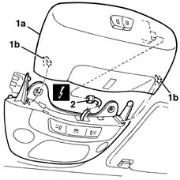
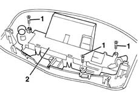
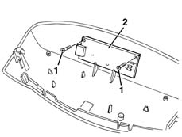

7030B64 sun-roof control switch - r+r
- Path
- Procedures > 70 FITTINGS > 7030 SUN ROOF AND HOOD > 7030B sliding roof > 7030B64 sun-roof control switch - r+r
- Kind
- repair procedure (removal / refitting; the operation number is the code)
- Applies to
- all engines; all production periods
- Interactive page
- https://sloeber94.github.io/elrnDB-lYpsln/en/#/2429560
Applies to: all engines; all production periods
 Removing
Removing
 Refitting
Refitting1. Move the moulding (1a) releasing the inner retainers (1b).
2. Disconnect the electrical connection for the sun roof switches.
 | Name | Connector |
|---|---|---|
2 | Sun roof switch |

Applies to: all engines; all production periods
1. Undo the bolts.
2. Remove the cover.

Applies to: all engines; all production periods
1. Undo the bolts.
2. Remove the base with the switches.

Applies to: all engines; all production periods
Refitting
RemovingCheck that the switch is undamaged.
Position the base and secure it using the bolts.
Position the cover and secure it using the bolts.
Connect the electrical connection and position the moulding attaching the retainers.